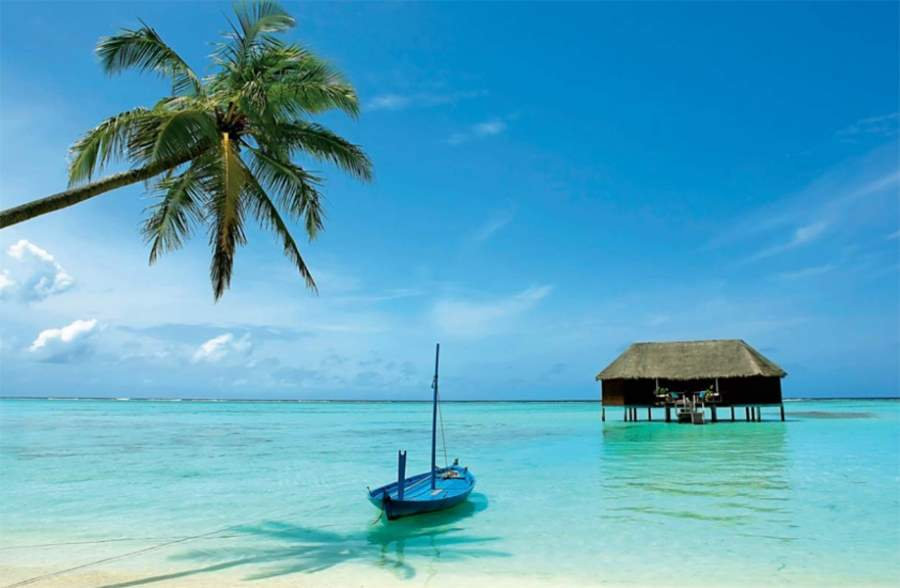
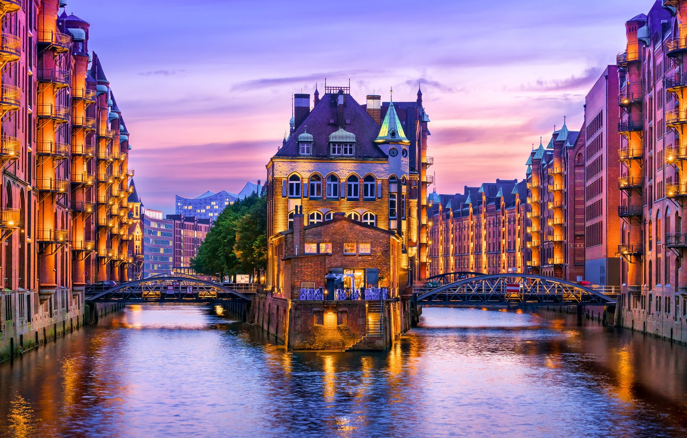
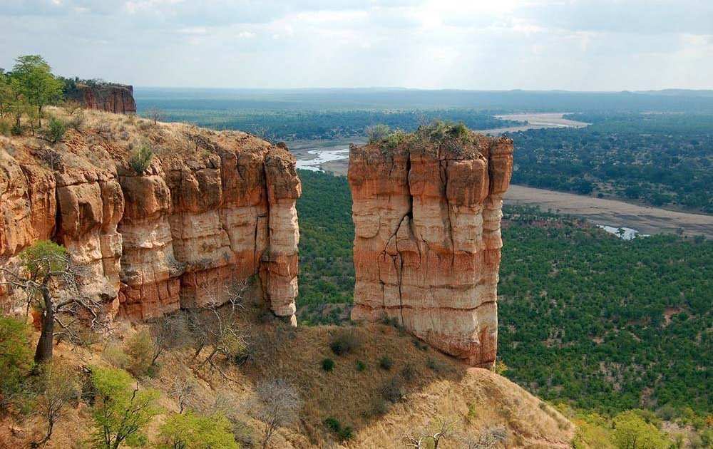
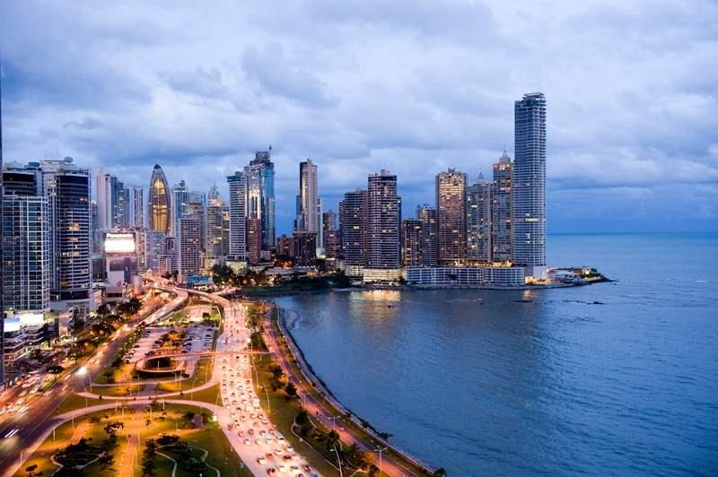
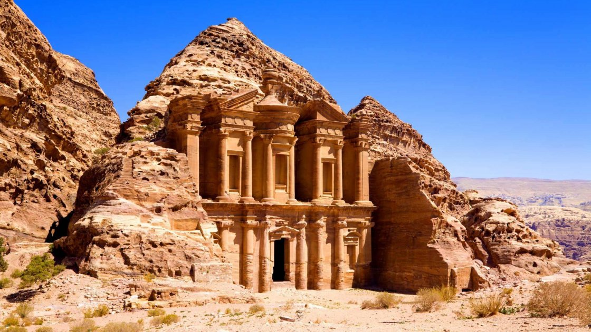
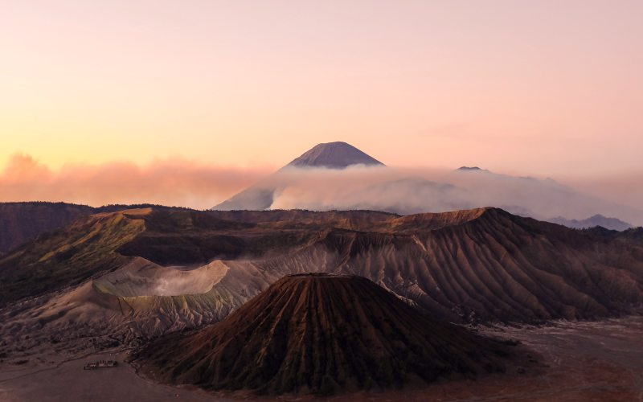

Країни, які варто відвідати
1. Шрі-Ланка
Ось вона – країна переможець! За що любити Шрі-Ланку? Так за все! За суміш релігій і культур, за стародавні храми, багату дику природу, за кращі місця для серфінгу і, звичайно ж, за добрих, чуйних людей. Зараз країна здобула крила, відродилася після десятиліть громадянського конфлікту і при цьому залишилася гостинній, доброзичливою.
2. Німеччина
В цьому році в Берліні, Веймере і Дессау відкриються зовсім неймовірні художні музеї. Вже анонсовані виставки та заходи по всій країні.
3. Зімбабве
Зімбабве завжди була країною, про яку мріяли мандрівники. Мало того, що це одне з найбезпечніших місць в Африці, так ще й, напевно, саме гостинне. Місцеві жителі дуже раді приїжджим, адже завдяки туризму країна рухається до нового світанку.
4. Панама
За порцією запаморочливих емоцій летите в Панаму. У цій країні величезна кількість скарбів. Чого тільки варті пляжі з білим піском, тропічні ліси і туманні нагір'я!
5. Киргизія
На арені світового туризму Киргизія з'явилася в минулому році завдяки іграм World Nomad Games, присвяченим традиційним, іноді вельми незвичайним, регіональних видів спорту. Про комфорт туристів у країні дбають. Так, вже проклали майже 3000 км нових маршрутів для походів, модернізували автомагістралі і спростили процес отримання електронної візи.
6. Йорданія
Не уявляєте життя без пригод? Вирушайте в тур по Йорданії. Насолоджуйтеся краєвидами долини Ріфт, її каньйонами і зеленню, яка устлала все навколо після раптових повеней. Побувайте на Мертвому морі – найнижчій точці на Землі, вдихніть аромат польових квітів, розкиданих серед замків хрестоносців. Відчуйте характер місцевих, зарядитесь невгамовним йорданським оптимізмом.
7. Індонезія
Останнім часом деякі райони Індонезії терзали землетрусу, але більша частина цієї величезної країни залишається безпечною для туризму. авдяки величезним інвестиціям у нові повітряні, сухопутні і морські повідомлення, а також безвизу для 169 країн (в тому числі для України), досліджувати цю тропічну країну стало значно простіше. Поспішайте познайомитися з фантастичною Індонезією, поки ще всі її секрети розкриті.
На головну